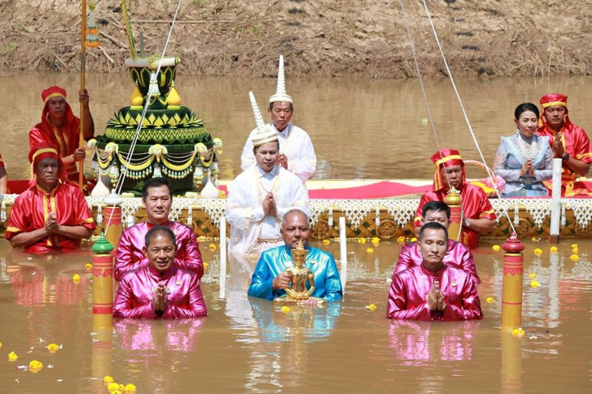

ประเพณีภาคเหนือ
ประเพณีอุ้มพระดำน้ำ
ประเพณีอุ้มพระดำน้ำเป็นประเพณีที่มีเพียงแห่งเดียวในประเทศไทย เกิดจากความเชื่อเกี่ยวกับอภินิหารของพระพุทธรูปสำคัญคู่บ้านคู่เมือง คือ พระพุทธมหาธรรมราชา ซึ่งคนหาปลาสองสามีภรรยาทอดแหได้ที่วังเกาะระสารในบริเวณลุ่มน้ำป่าสักในเขตตัวเมืองเพชรบูรณ์ จึงนำไปไว้ที่วัดไตรภูมิ เมื่อถึงเทศกาลสารทพระพุทธรูปองค์นี้จะหายไปและชาวบ้านจะพบมาเล่นน้ำที่บริเวณที่ค้นพบเดิม ดังนั้นในเทศกาลทำบุญสารทหลังจากทำบุญเสร็จแล้วจะมีพิธีอัญเชิญ พระพุทธมหาธรรมราชาลงริ้วขบวนเรือไปสรงน้ำที่วังเกาะระสาร แต่ปัจจุบันนำมาทำพิธีที่ท่าน้ำของวัดโบสถ์ชนะมารในวันแรม ๑๕ ค่ำ เดือน ๑๐
|  |  |
ประเพณีการแข่งเรือยาว
การแข่งเรือในจังหวัดนครสวรรค์มีชื่อเสียงมาก โดยเฉพาะที่วัดเกาะหงษ์ ตำบลตะเคียนเลื่อน อำเภอเมือง จังหวัดนครสวรรค์ จะมีเรือที่มีชื่อเสียงจากต่างจังหวัดมาร่วมแข่งขันมากมาย ปัจจุบันจังหวัดเป็นผู้จัดการแข่งขันกันบริเวณสะพานเดชาติวงศ์ จัดหลังออกพรรษา ภายในเดือน
 |
 |